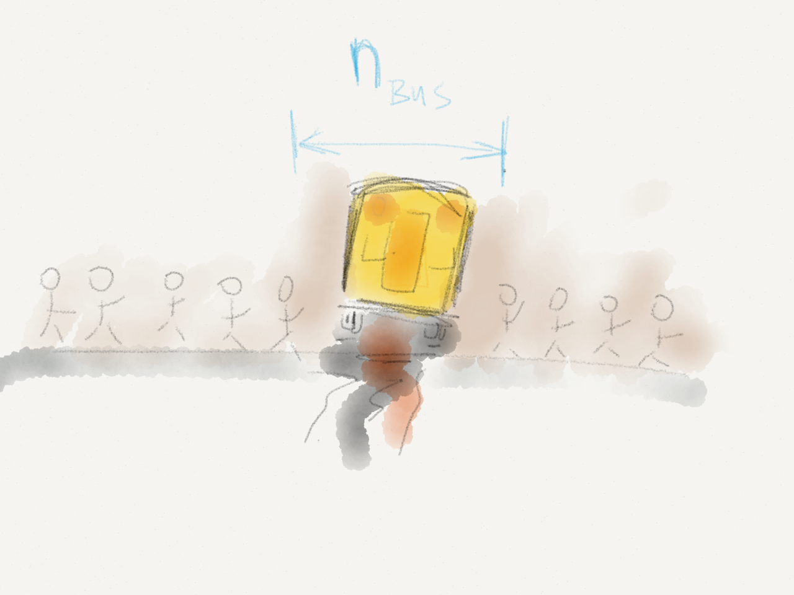

Deploy like nobody is watching.
March 11th, 2015
@bascht
Ye olde DevOps

Silos

Distribution of roles
Creative Commons Attribution 4.0 International (http://commons.wikimedia.org/wiki/File:The_Devil_and_Dr._Faustus_meet._Wellcome_L0031469.jpg)…the »old world« software developer…
…the »old world« system administrator…
So – let's swap roles.
(Can't be that hard, no?)
* { /* No idea what I'm cascading here… */
color: 'Kornblumenblau' !important;
}
$$('I'){
$('will#wrap').each(function('until'){
return this.self._self.that['crap'].works;
});
};;;; // eat ._this, jslint!
$ sudo sudo su -c "sudo do --what 'I want'"
Small castles
CC BY-NC-ND 2.0 — Jos van Wunnik

Galileo Galilei - 1636
nginx::resource::upstream { 'here_be_dragons':
members => [
'lolcathost:8080',
'lolcathost:8081',
'lolcathost:8082',
],
}
nginx::resource::vhost { 'app.yournextstartup.com':
proxy => 'http://here_be_dragons',
}
Tools
ansiblebcfg2cdistchefcfengineisconfjujulcfg ocsinventoryngwithglpiopsipikt puppetquattorradmindrex rundecksmartfrogsaltspacewalkBeing responsible for the artefact that is shipped.
Every step of the pipeline.

MANAGEMENT = :mediocre
CUSTOMER = :opinionated
def my_little_farm(requirements)
engineering = :truly_optimistic
trap("SIGINT") { ignore_those_admins }
pray_for(some.kind_of? Wonder)
ship!
end
Releases.
Imagine…
…it's friday.
Your deployment plan…

…doesn't scale very well.
gut metrics
Who truly understands every base / helper / tools / domain class?
Who understands your deployment process?
busnumber
Why not…
- deploy as often as possible?
- let the new employee deploy on her first day?
- deploy when nobody is watching?
2015
Infrastructure code is code as well!
Are your problems bubbling up…
- …from app code?
- …from your server configuration?
- …during rollout?
…because of poor orchestration?

© 2013 — theprofoundprogrammer.com
No more excuses.
- Infrastructure problem?
- File an issue
- Infrastructure change?
- Hand in a story
- App Changes need infrastructure changes?
- Orchestrate your rollouts.
No commit without an issue id / feature branch.
No major release without documentation in an issue.
Do code reviews.
- Yes. for infrastructure.
- Yes. Even for infrastructure.
Sorry, but there is no one-size-fits-all solution.
Quelle: GFDL image by user Fanghong. Creative Commons Attribution-Share Alike 3.0 Unported
Well, turns out there is.
Documentation
(imagine rolling thunder)
CLI > Code > Wiki
$ bin/deploy --wat?
Actually use your Wiki!

- New employees?
- Old hostnames?
- Cross references!
- Macros?
- Copy / Paste commands?
Your toolchain?
- in version control
- useful names
- well documented
- self-explanatory
- independent from the environment
Use some nice wrapping.
#!/bin/(da|ba)sh #nope#!/usr/bin/env ruby... there are dark corners in the Bourne shell, and people use all of them.
--Chet Ramey
Build for the worst.

- Do your error pages cover every layer?
- Will every layer fail gracefully?
- Can you roll back?
- Should you roll back?
- Can you deactivate features?
- Can you afford to deliver stale content?
restore > backup
employee of the month

Updating artefacts isn't the last step!
Monitor every deployment. Gather health checks.
Steal good ideas!
$ curl -XGET 'lolcathost:9200/_cluster/health?pretty=true'
{
"cluster_name" : "prism_europe",
"status" : "green",
"timed_out" : false,
"number_of_nodes" : 242,
"number_of_data_nerds" : 242
"active_primary_shards" : 50,
"active_shards" : 100,
"people_actually_reading_this_slide": 1,
"relocating_shards" : 0,
"initializing_shards" : 0
}
Use obvious tools.
var casper = require('casper').create();
var baseurl = casper.cli.get("baseurl") || 'http://bascht.com';
casper.start(baseurl, function() {
this.capture('shots/homepage.png');
this.test.assertTitle('bascht.com');
this.test.assertExists('input[action$="/search"]', 'Yay!');
this.clickLabel('Blog', 'a');
});
Treat staging failures like as if they were production failures.
— Timothy Fitz (IMVU)
We're almost done.
Specialization is for insects.
-- Robert A. Heinlein
See how things work out.
# ~/.bash_login
rm ~/.bash_history && sync;
echo "They never fail who die, In a great cause! Lord Byron";
echo "Welcome to $(hostname).";
Sebastian Schulze
(@bascht / @bscht) , 29.years Software- & infrastructure developer Vogtland, Leipzig, Köln, Berlin, Munich